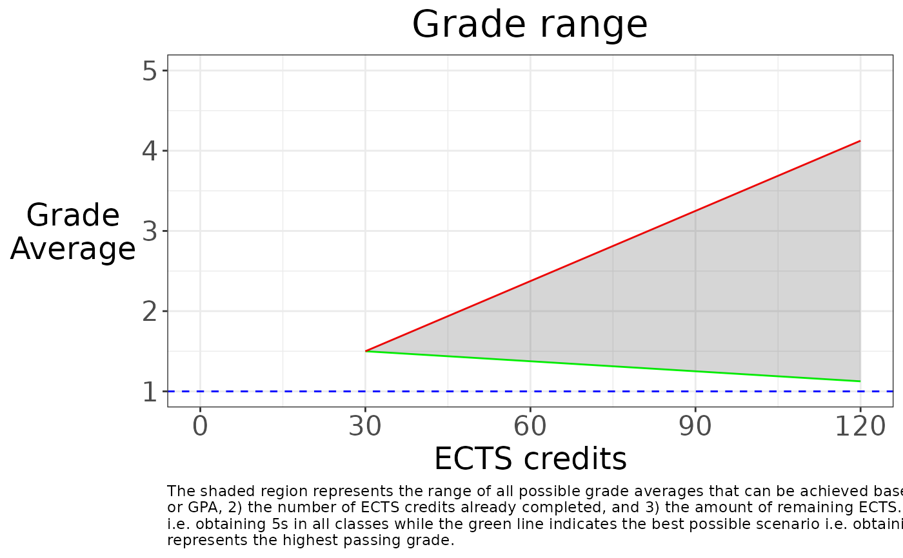

Plot grade range
plot_grade_range.RdPlot grade range
Usage
plot_grade_range(
completed_ects,
current_grade,
remaining_ects,
max_passing_grade = 1,
min_passing_grade = 5,
show_caption = T,
caption_width = 150
)Arguments
- completed_ects
the number of ECTS credits already completed
- current_grade
the current grade average
- remaining_ects
the number of ECTS credits remaining to complete
- max_passing_grade
the best possible grade
- min_passing_grade
the worst possible grade
- show_caption
whether or not to display the text caption
- caption_width
text width for the caption. default 150
Examples
# On the German scale
plot_grade_range(30, 1.5, 90)

# Now the same plot, but on the American scale and converting the grades.
# Note the `.` in the `plot_grade_range` function call. This is a placeholder
# for the result of the previous function call.
convert_to_freedom_units(1.5) %>%
plot_grade_range(30, ., 90, max_passing_grade = 4, min_passing_grade = 1)